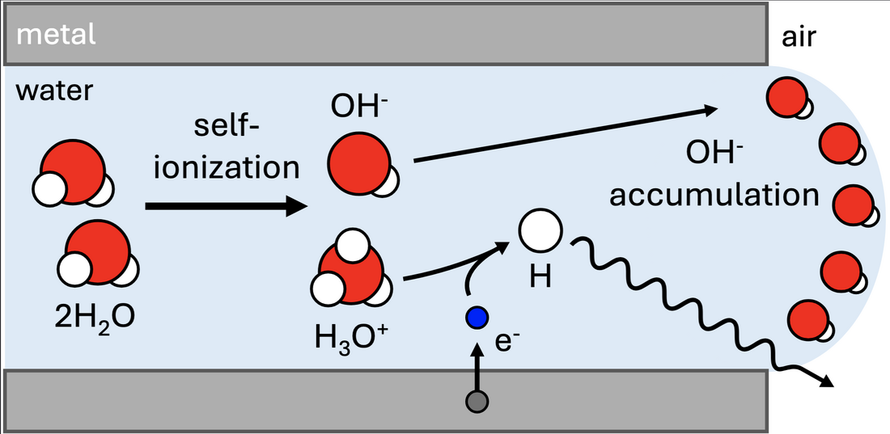
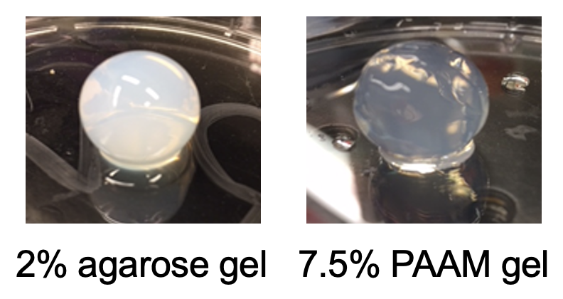
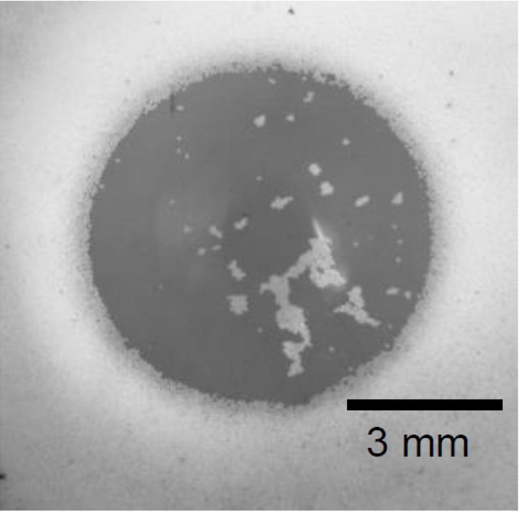
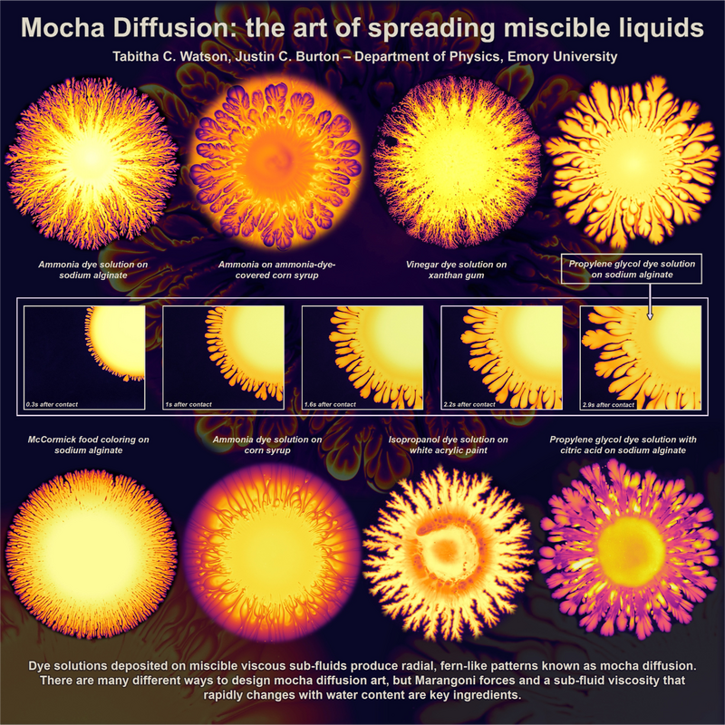

Fluids and soft solids are everywhere, yet basic questions about how they merge, break, slide, spread and charge remain open. We study drops, bubbles, hydrogels and thin films using high-speed imaging, electrical measurements, rheology and tribology, often finding behavior that existing theories miss.


Coalescence and singularities
Singularities organize dynamics across physics, and fluids let us watch them in the lab. When a drop or bubble breaks apart, its topology changes in finite time: velocities and pressures diverge while the connecting neck shrinks to zero width. How these quantities diverge depends on the fluid properties, defining universality classes much like those of critical phenomena. We have studied pinch-off in bubbles, drops, superfluid helium, and at nanometer scales, as well as the fission of charged drops.
Coalescence runs this process in reverse. Using an electrical method that probes drops just 10 ns after they touch, we found that the crossover from viscous to inertial coalescence happens unexpectedly late (PRL 2011), and that a third regime, governed by the resistance of inertia, describes the earliest moments of coalescence for all viscosities (PNAS 2012). In a dense outer fluid, the early dynamics are still set by the drop viscosity (Nature Communications 2014).
Many soft and biological materials, such as cell aggregates on a substrate, coalesce in ways that classical solutions miss. With simulations and theory, we identified a family of “frictional” coalescence processes, dominated by dissipation to the surroundings, with their own scaling laws (PRR 2024). Experiments on drops confined between two plates confirm a new universal regime: the bridge between the drops first grows as t1/2, then slows to t1/5 once flow in the gap obeys Darcy’s law (preprint 2026).
Relevant publications
- Droplet coalescence in fluids obeying Darcy’s law
- Coalescing clusters unveil new regimes of frictional fluid mechanics
- Coalescence of bubbles and drops in an outer fluid
- The inexorable resistance of inertia determines the initial regime of drop coalescence
- Viscous to inertial crossover in liquid drop coalescence
- Simulations of Coulombic fission of charged inviscid drops
- Bifurcation from bubble to droplet behavior in inviscid pinch-off
- Role of dimensionality and axisymmetry in fluid pinch-off and coalescence
- Scaling and instabilities in bubble pinch-off
- Fluid pinch-off dynamics at nanometer length scales
Charging at fluid–solid interfaces

Waterfalls and fuel pipelines can build up large electrical potentials, sometimes with dangerous discharges, simply because fluid flows past a surface. The mechanism behind this flow electrification is poorly understood, with implications reaching as far as the methane lakes of Titan. We measure the charge and mass of thousands of individual drops as they fall from a syringe into a Faraday cup on a balance.
For pure water leaving a grounded metal tip, each drop carries a small, reproducible negative charge of about −1 to −5 pC per gram, consistent with the Volta potential between the metal and water (about −0.5 V). The charge does not depend on release height, tip size, flow rate or shielding, and biasing the tip controls it linearly. Introduce plastic anywhere in the flow path, however, and the charging becomes large, erratic and history-dependent (Soft Matter 2025).
Relevant publications
Hydrogels


Hydrogels are cross-linked polymer networks that can be more than 90% water. Think of Orbeez, boba pearls and absorbent diapers; they are also used in contact lenses, tissue engineering, agriculture and cosmetics. Because their elasticity is coupled to fluid flow through a nanoscale mesh, hydrogels have unusual frictional and mechanical properties.
Friction. Using a custom tribometer, we identified three regimes of hydrogel friction on smooth surfaces. At low sliding speeds, friction is controlled by fluid flow through the porous network and is inversely proportional to the pore size. Above a critical speed, friction drops sharply as a lubricating film forms, and then relaxes slowly over minutes to hours as polymers at the sliding interface stretch and recover (PNAS 2020; Experimental Mechanics 2021).
Swelling under shear. Soft hydrogels and biopolymer networks are known to contract when sheared. We found that stiff hydrogels, with moduli of roughly 10–100 kPa, do the opposite: they swell. Shearing produces a normal stress that grows quadratically with strain and persists for hours, and during sliding this dilatancy draws fluid into the gel. This hyperelastic swelling may help explain the rehydration and mechanical rejuvenation of tissues such as cartilage (PRL 2025).
The Leidenfrost effect
A drop of water on a very hot pan does not boil away; it skates on a thin cushion of its own vapor. We measured the shape of this vapor layer with laser interference (PRL 2012) and discovered that large drops spontaneously develop star-shaped oscillations with 2 to 13 lobes, driven by capillary waves whose wavelength is set only by the liquid’s capillary length (PRF 2017; JFM 2018). The video shows these stars in drops about 3 cm across.
Vapor layers are surprisingly robust. Treating the vapor layer as part of an electrical circuit, we measured its thickness at high speed and found that, once formed at around 240 °C, it survives until the surface cools to about 140 °C, regardless of metal or water salinity (PRL 2021). Simulations show that inertia, usually ignored in theories of the vapor layer, triggers its explosive collapse (PRF 2023).
Relevant publications
Wetting, films and fingering

Spreading and evaporation. A drop of volatile liquid on a wettable surface spreads and evaporates in a fraction of a second. Add a trace of a less volatile, miscible liquid and the contact line destabilizes. Strong solutal Marangoni forces produce fingers that deposit a submicron film, while weaker ones leave isolated pearl-like drops in quasicrystalline patterns, a behavior we can tune with the wettability of the surface (PRL 2020; PRF 2019, Gallery of Fluid Motion award).
Viscous fingering. When a low-viscosity fluid pushes into a more viscous one in a channel less than 1 mm thick, the interface forms fingers. Changes in channel thickness can make a finger unstable and break, and the resulting “bubbling” raises the pressure, much as oil, water or magma can do when flowing through porous rock.
Liquids at surfaces. Does water slip along a smooth, water-repellent surface? Using a quartz crystal microbalance, we found little or no slip for water on all surfaces, but detected excess transverse motion near hydrophobic surfaces, an essential precursor to slip (PRL 2018).
Giant soap bubbles. With soap, water and long-chain polymers, street performers make bubbles with volumes approaching 100 m³. We found that extensional rheology is the key to forming these enormous films, and that mixing polymers of different molecular weights works best at low concentrations (PRF 2020). The work was featured by Smithsonian and Popular Mechanics.
Relevant publications
Sedimentation of shaped particles
From marine snow to microorganisms and laboratory centrifuges, particles settling at low Reynolds number move in ways set by their shape and mass distribution, and even simple shapes can tumble, drift and orbit in surprising ways. Particles made of spheres glued together, with an offset center of mass, repel one another as they sink, more strongly for more elongated shapes (JFM 2023).
Predicting this motion requires a particle’s full 6×6 mobility tensor, which is hard to obtain for arbitrary shapes. We developed a fast numerical method that takes a standard 3D-printing (STL) file, represents the particle surface with point forces (stokeslets), and computes the mobility tensor. Validated against analytical solutions and recent experiments on helical ribbons and bent disks, it shows that every initial orientation evolves toward one, two or three final motions determined by the object, a useful tool for designing steerable particles (preprint 2026).
Polymer interfaces and the quartz crystal microbalance
With Connie Roth’s group at Emory, we use the quartz crystal microbalance (QCM) as a megahertz probe of polymer mechanics. We developed a physically intuitive continuum model of shear-wave propagation through polymer films (J. Polymer Science 2021) and a transfer-matrix analysis that recovers how the shear modulus varies with depth (Macromolecules 2025).
Applied to bilayers of glassy polystyrene and rubbery polybutadiene, these tools show that when the roughly 5 nm interface between the polymers forms, a gradient in modulus develops that spans about 200 nm, far wider than the interface itself (PNAS 2023). Inserting a 5 nm impedance-matching copolymer layer at the interface speeds up this long-range coupling, supporting the idea that it arises from acoustic impedance matching of nanoscale vibrations (J. Chemical Physics 2026).
Relevant publications
- Narrow acoustic impedance matching layer accelerates long-range coupling of local modulus between glassy and rubbery polymer domains
- Analyzing QCM data using a new transfer-matrix model
- Development of broad modulus profile upon polymer–polymer interface formation between immiscible glassy–rubbery domains
- Physically intuitive continuum mechanics model for QCM: viscoelasticity of rubbery polymers at MHz frequencies